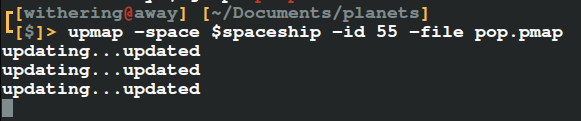

UPmap
Okay, you've almost certainly not heard of UPmap. So let's just go around the outline and I can explain everything in the next few sections.
UPmap is a tool for Planetarium.
Planetarium is a game where people create things, and other people play them.
What is Planetarium?
Planetarium is a game ive recently been playing, it's a place where players can create things named "Planets" and other players and play these "Planets". It is very similar to Roblox or BrickHill but different in a sense.
Okay yeah, so the game has a workshop where players can create stuff in it, and it has a page where you can play these games that players make. I've made a few planets myself as the time of writing this, this one's probably my favorite: pop the bubbles
What is UPmap?
UPmap is a tool on MIT License that waits for a PMap file to update and then automatically publishes the game to Planetarium.
A PMap file is what Planetarium uses to save your game, it's in XML format and it is a pain to use. It is something that the website asks for when you want to publish your game.
So this UPmap tool is a blanket that you can place over your PMap file, and it waits for the PMap file to get written to, as soon as it does it will make an API request to Planetarium to publish your game automatically.
UPmap has other options but waiting for a write is the default. Using the -now flag skips waiting for a save and just updates it now, or you can use the -silent flag and then put it in the background with "&" and it's seamless.
I'm not going to sit here and list out the usage and examples, that's the job for the README.md so I suggest reading it for yourself.